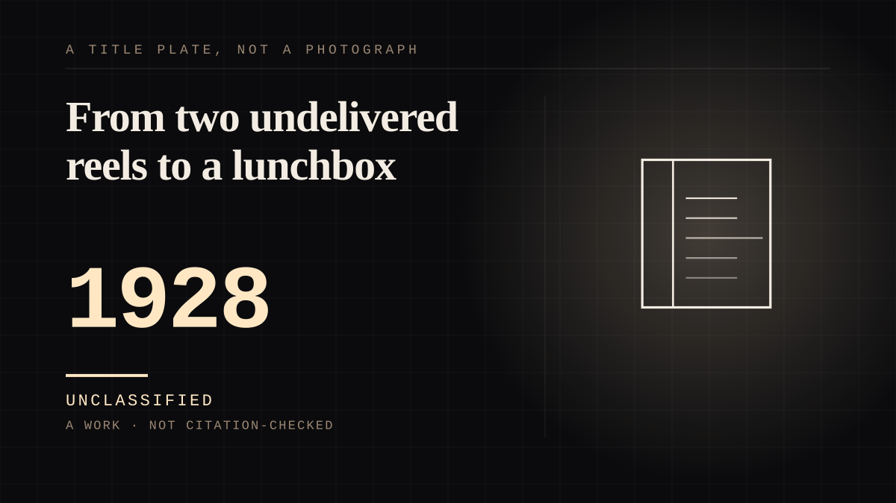

A work · 1928 · Silent era
From two undelivered reels to a lunchbox
A cartoon mouse with a licensed lunchbox, a walk-of-fame star and a park where you can meet him - the first character to be manufactured as an object and then put back in the room with you.

This is `howdy-doody` nineteen years early and further along, and it is the point at which the fictional figure stops being a picture and becomes a product with a supply chain. Walt Disney and Ub Iwerks made him as a replacement for Oswald the Lucky Rabbit; he was "originally to be named 'Mortimer Mouse', until Disney's wife, **Lillian**, suggested 'Mickey'"; and his first two shorts, *Plane Crazy* and *The Gallopin' Gaucho*, **were not picked up for distribution**. The public debut was *Steamboat Willie* (1928) - the third attempt, and the one that worked, which is a useful reminder that the famous version is usually the version somebody retried. What makes the entry is the licensing. **"Since his early years, Mickey Mouse has been licensed by Disney to appear on many different kinds of merchandise. Mickey was produced as plush toys and figurines, and Mickey's image has graced almost everything from T-shirts to lunchboxes."** Over 130 films, a comic strip that ran 45 years, and a merchandising department run by **Kay Kamen from 1932 until his death in 1949**, "a 'stickler for quality'", named a Disney Legend in 1998 - which is the detail that matters, because the object pipeline needed somebody whose job was to police what the figure was allowed to appear on. The character was **licensed from the beginning**, which is the commercial form of `made`: the other end is worked by a company and sold back to you. And then the two facts that tie it to the rest of this corpus. In 1978 **Mickey became the first cartoon character to have a star on the Hollywood Walk of Fame**, and he is described as **"a meetable character at the Disney parks"**. Meetable. A drawn figure who exists on a screen and cannot hear you became a person in a room who can see you - which is the whole of `the-fourth-wall`'s argument arriving fifty years early, and arriving as a ticket price.
Where it sits
1900 1900-1949 · 1928 1949
Provenance · 1 source record(s)
- retrievableOrigin and naming: 'The character was originally to be named "Mortimer Mouse", until Disney's wife, Lillian , suggested "Mickey". Mickey first appeared in two 1928 shorts Plane Crazy and The Gallopin' Gaucho (which were not picked up for distribution) before his public debut in Steamboat Willie (1928).' Creation: 'Mickey Mouse was created as a replacement for Oswald the Lucky Rabbit, an earlier cartoon character', by Walt Disney and Ub Iwerks. Reach: 'The character went on to appear in over 130 films, mostly short films... Since 1930, Mickey has been featured extensively in comic strips (including the Mickey Mouse comic strip, which ran for 45 years)'. And the pipeline: 'Since his early years, Mickey Mouse has been licensed by Disney to appear on many different kinds of merchandise. Mickey was produced as plush toys and figurines, and Mickey's image has graced almost everything from T-shirts to lunchboxes. Largely responsible for early Disney merchandising was Kay Kamen , Disney's head of merchandise and licensing from 1932 until his death in 1949, who was called a "stickler for quality".' Presence: 'he also appears in media such as video games as well as merchandising and is a meetable character at the Disney parks', and 'In 1978, Mickey became the first cartoon character to have a star on the Hollywood Walk of Fame.'Mickey Mouse. Wikipedia. ↗
Not yet stood behind. The entry is real. A person has not read the citation and confirmed it, so treat the date as approximate until they do.
Connected · 3 out, 0 in
It sits in
The full timeline → · The database → · See it in the atlas →